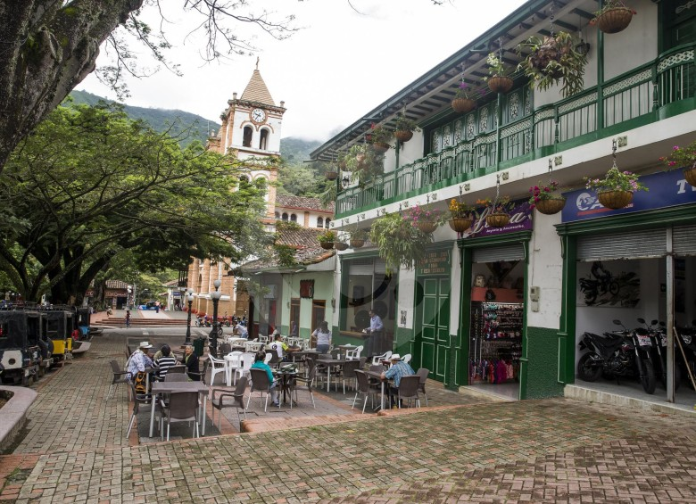

NUESTROS VIAJES
CIUDAD BOLIVAR

Este municipio está ubicado a 1.200 m sobre el nivel del mar y tiene un clima cálido, con una temperatura aproximada de 22°C. Esta a una distancia de 102 Km.. de Medellín, recorrido que tiene una duración de 2.5 horas. Posee una extensión de 282 Km.
GUARNE

El Carmen de Viboral fue fundado en 1690 y erigido municipio en 1814. Está localizado en el oriente antioqueño, tiene una extensión de 448 kilómetros cuadrados y dista 54 de Medellín. Su cabecera está ubicada a 2150 metros sobre el nivel del mar y tiene una temperatura promedio de 17 grados centígrados.